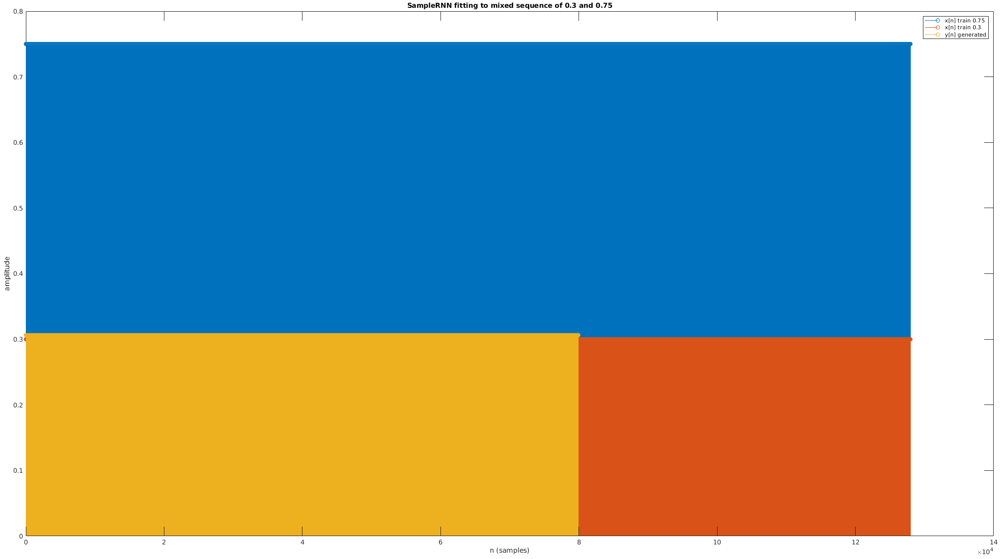
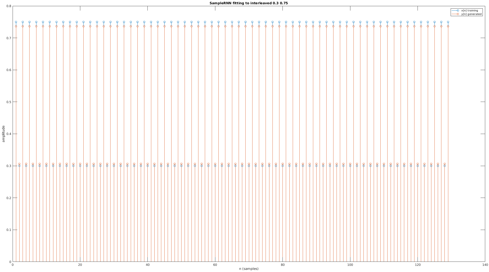
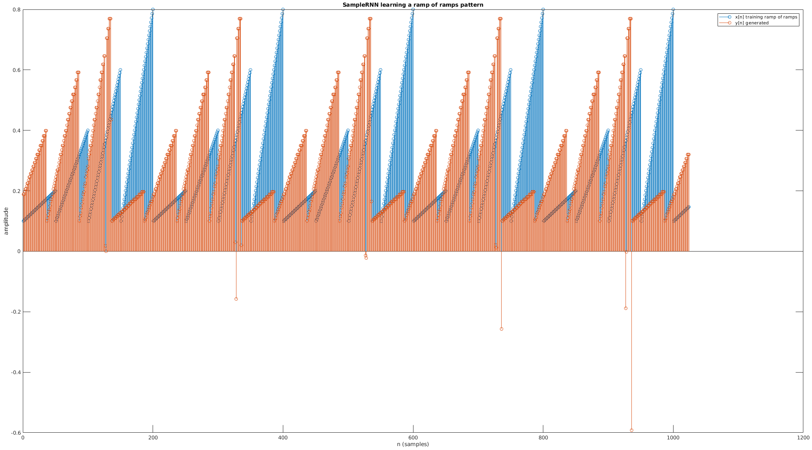
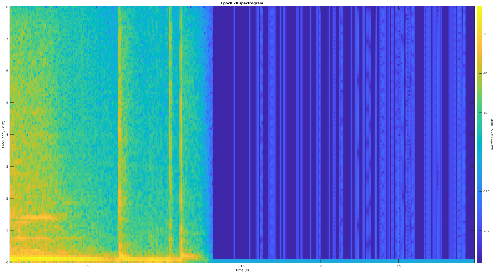
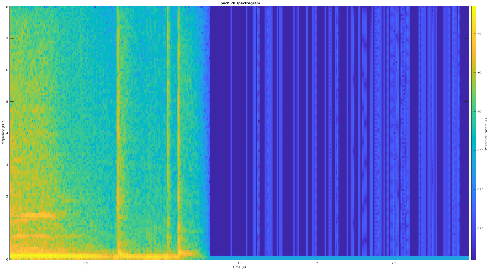
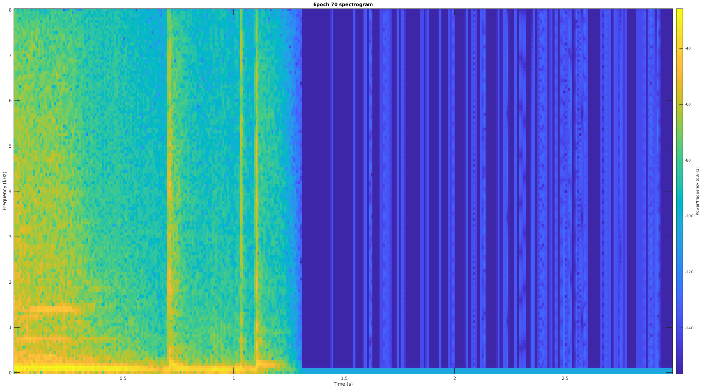

The RNCM (Royal Northern College of Music) PRiSM (Practice and Research in Science and Music) lab released a modern implementation of 3-tier SampleRNN[1]:
PRiSM is shortly going to publish its own implementation, using TensorFlow 2, and we’ll be explaining the features of the PRiSM SampleRNN in our next instalment – when we will also make the code available on PRiSM’s GitHub pages, along with a number of pretrained and optimised models.
Since the dadabots discourage the use of their own 3-tier model, we'll use the PRiSM repo (where the 3-tier model is the primary focus).
Python setup + minor code tweaks
I forked the original prism-samplernn[2] codebase to my own GitHub profile to make a minor adjustment in the scripts[3].
Without this parameter, the training would crash on my GPU (RTX 2070 SUPER) with a mysterious error message, "Fail to find the dnn implementation". It's an esoteric fix that one can find scattered across GitHub.
The Python setup is straightforward using conda[4] and following the project's README.md:
I'll summarize the available SampleRNN hyperparameters and other customizeable steps compared across the original 2017 ICLR implementation, the Dadabots fork, the PRiSM fork which I use throughout the rest of this report, and finally my own modifications to the PRiSM parameters after experiment 0:
Original
Dadabots
PRiSM
Mine
Descr
RNN layers
4
5
4
5
Quality of results (dadabots note that 5 learns music better than 4)
Tiers
2 or 3
2 or 3 (2 recommended for good music)
3
2, 3
Tiers of RNN (more = wider temporal timescale, but...*)
Frame sizes (corresponds to tiers)
16
16
16,64
3: 16,64, 2: 16
Samples apart between low and high timescales
Sample rate
16000 (fixed)
16000
16000
16000
Sample rate of training/generating waveform (lower = faster learning, better able to learn long-timescale patterns)
Training input
No details
Chop albums into 8s + 1s overlap
Chop albums into 8s + 1s overlap
Chop albums into 8s + 1s overlap
Suggestions on how to prepare training data
Epochs
Not customizeable
Not customizeable
100
100, 250
Entire cycles of training on the same data (more = possibly better learning, but not necessarily)
The frame sizes 16, 64 correspond to the additional tiers of SampleRNN (the first tier is always n = 1, or consecutive samples). A 2-tier SampleRNN architecture has a wider temporal scale of learning at 16 frames, while a 3-tier SampleRNN architecture learns at 16 and 64 frames.
Preliminary experiments: training on synthetic waveforms
Since SampleRNN operates on samples, it means I can use non-musical synthetic waveforms to verify some basic behaviors. Disclaimer that this is just an attempt to peek at SampleRNN's black box decisions, and not a rigorous experimental method. Using MATLAB, I generated some different sequences and permutations of floating point vectors:
The above commands create a variety of "fake" wav files containing some simple sequences of floats, which I then used as training inputs for SampleRNN.
Training to fit a sequence of all 0.3
The first thing I verified is whether we can simply train SampleRNN only on samples [0.3, 0.3, ...] and have it be 100% overfitted (and generate exactly only [0.3, 0.3, ...] as a result).
The training command (which outputs an example generated clip that I used as y[n]) is as follows. I mimicked the real preprocessing and training steps:
# chop up the fake wav clip of [0.3, 0.3, ...] into 8-second overlapping clips
$ python ./chunk_audio.py --input_file ./0_3.wav --output_dir ./testdata-waveform-0.3/ --chunk_length 8000 --overlap 1000
# train on the folder of [0.3, 0.3, ...]
$ python train.py --id testdata-waveform-0.3 --data_dir ./testdata-waveform-0.3 --num_epochs 5 --batch_size 64 --sample_rate 16000
# the displayed y[n] is emitted during training in "generated/testdata-waveform-0.3/testdata-waveform-0.3_epoch_1.wav"
Within 2 epochs (~15 minutes of training), the loss was 0.0% and accuracy was 100.0%, indicating that the model learned quickly how to generate the value 0.3:
Interestingly, the values of the generated waveform aren't exactly 0.3 but 0.306 - I don't know where that comes from but it could be from the round-trip through SampleRNN's quantization layers.
Training on a mixture of 0.3 and 0.75
My next test was to see what happened if I trained on a mixture of 0.3 and 0.75. Recall the creation command:
At a sampling rate of 16000 Hz, this is 5 seconds of 0.3 followed by 5 seconds of 0.75 (repeated 2x overall). In addition to the clip emitted during training, I also generated an additional 4 clips. The results were as follows (n.b. this is a dense stem plot that makes it look like colored rectangles):

Every generated clip had the value 0.306, and not 0.75. The model only learned how to generate 0.3s from observing a 50/50 split of monolithic sequences of [0.3, ...] and [0.75, ...], which is an interesting outcome. I generated 10s of clips that all only contained 0.3.
Training on interleaved 0.3,0.75 consecutive sample pairs
The lowest and most important temporal scale of learning of SampleRNN is on the level of individual consecutive samples. An easy experiment to verify this is to create a sequence of [0.3, 0.75, 0.3, 0.75, ...] and validate that the output is similar:

The output is the same, which is expected.
Training on mixed interleaved 0.3,0.75 and 0.3,0.66 consecutive sample pairs
In a similar experiment to mixing 0.3 and 0.75 (where the outcome was that only 0.3 was generated as an output), let's train on a 50/50 mix of interleaved pairs of 0.3,0.75 and 0.3,0.66:
As we saw with the 50/50 mix of 0.3 and 0.75, the output seems to adhere to only one of the training inputs, and not both.
Training with 16-sample temporal patterns
Next up is to test the "tiers = temporal scales of learning" hypothesis. To recap, in the 3-tier SampleRNN, there should be learning at the level of consecutive samples, followed by learning on broader frames that are of size 16 and 64 samples. Let's create another fake waveform with a ramp that repeats at every 16 samples:
Note that while this is very different from a real pattern in music, it should still count as a pattern in the waveform that SampleRNN can learn:
This is one of my favorite results of the preliminary experiments, showing that SampleRNN could faithfully recreate the ramping pattern, but with some oddities (negative-valued samples).
The accuracy and loss capped at the following values after 1 epoch:
An interesting note is that during the training I immediately noticed that even from the first epoch of training on 32-sample temporal patterns, the loss was lower and accuracy higher:
Results:

It looks to me as if SampleRNN overfitted (desired, in this case) very well to the ramp-of-ramps pattern that spanned multiple temporal timescales.
Preliminary tests - thoughts
We can see that 3-tier SampleRNN generalizes to several different waveform patterns, from simple 16-sample ramps to a 200-sample meta-pattern (ramp of ramps).
One unexplained result is why, when presented with a 50/50 mix of different outcomes, SampleRNN adheres to only one of the training datasets and doesn't generate two different results. In the 50/50 tests, I would have expected at least 1 generated clip to only consist of [0.75, ...].
Experiment 0: training on a single album
We'll train 3-tier SampleRNN first on Animals as Leaders' self-titled album:
I downloaded the audio using youtube-dl, converted it to 16kHz mono with ffmpeg (recommended for SampleRNN to perform better), split it up into chunks (ignoring silence) using the prism-samplernn script chunk_audio.py, and ran the training with default parameters:
This emitted some generated clips during the training. Let's listen to 2 of the more musically interesting clips (a lot of them are just silence), generated at epoch 20 and 85 of the 100-epoch training. An epoch is one cycle of the entire training dataset - this means that the neural network observed the same album 100 times iteratively to learn how to model it:
Epoch 20:
Epoch 85:
After the training was done (it took ~3 days on my machine), I generated 2 10-second clips of what I thought would be "Animas-as-Leaders-esque" music. The generate command is:
This says to use the model checkpoint 90. Even though we specified 100 epochs in the training, the model has an intelligent stop when it sees that additional training is not improving the model. In this case, it seems like 90 epochs exhausted the model's learning ability. Here's one of them (both sound equally bad):
Experiment 0 lessons
I applied tweaks that Karl Hiner[5] did in his experiments - for my next experiment, I would try some or all of the following:
Increase the number of RNN layers from 4 to 5 to try to create more cohesive music
Use more training data than just one album
Increase epochs from 100 to 250 (longer training may lead to better results)
We're also probably running into the same discovery of others, that 3-tier architecture of the PRiSM-SampleRNN implementation may be producing worse music than 2-tier.
Experiment 1: longer training on multiple albums
For my next experiment, I downloaded instrumental versions of the albums of Periphery (instrumental - I didn't want vocals mixing into the results, as I want to focus on musical instruments acoustics) and Mestis (an instrumental band). The data fetch and preprocessing scripts are available in my prism-samplernn fork:
#!/usr/bin/env bash
echo "Fetching training data - youtube-dl wav files for Mestis and Periphery albums"
# youtube playlists for Mestis - Eikasia, Polysemy, Basal Ganglia
mestis_album_1="PLNOrZEIoYAMgLJeZeCUEhABLPz7yqkyfI"
mestis_album_2="PLfoVvOUi1CqV0O-yMdOvTff_vp8hOQnWi"
mestis_album_3="PLRK89uMjq03BMsxBKFGBcDAh2G7ACwJMK"
youtube-dl -ci -f "bestaudio" -x --audio-format wav -i ${mestis_album_1}
youtube-dl -ci -f "bestaudio" -x --audio-format wav -i ${mestis_album_2}
youtube-dl -ci -f "bestaudio" -x --audio-format wav -i ${mestis_album_3}
# youtube playlists for instrumental Periphery albums - Periphery III, I, II, IV, Omega, Juggernaut
periphery_album_1="PLSTnbYVfZR03JGmoJri6Sgvl4f0VAi9st"
periphery_album_2="PL7DVODcLLjFplM5Rw-bNUyrwAECIPRK26"
periphery_album_3="PLuEYu7jyZXdde7ePWV1RUvrpDKB8Gr6ex"
periphery_album_45="PLEFyfJZV-vtKeBedXTv82yxS7gRZkzfWr"
periphery_album_6="PL6FJ2Ri6gSpOWcbdq--P5J0IRcgH-4RVm"
youtube-dl -ci -f "bestaudio" -x --audio-format wav -i ${periphery_album_1}
youtube-dl -ci -f "bestaudio" -x --audio-format wav -i ${periphery_album_2}
youtube-dl -ci -f "bestaudio" -x --audio-format wav -i ${periphery_album_3}
youtube-dl -ci -f "bestaudio" -x --audio-format wav -i ${periphery_album_45}
youtube-dl -ci -f "bestaudio" -x --audio-format wav -i ${periphery_album_6}
mkdir -p periphery-raw
mkdir -p mestis-raw
find . -maxdepth 1 -mindepth 1 -type f -iname '*PERIPHERY*.wav' -exec mv {} periphery-raw/ \;
find . -maxdepth 1 -mindepth 1 -type f -iname '*MESTIS*.wav' -exec mv {} mestis-raw/ \;
find . -maxdepth 1 -mindepth 1 -type f -iname '*Javier*.wav' -exec mv {} mestis-raw/ \;
find . -maxdepth 1 -mindepth 1 -type f -iname '*Suspiro*.wav' -exec mv {} mestis-raw/ \;
find . -maxdepth 1 -mindepth 1 -type f -name '*.wav' -exec rm {} \;
mkdir -p mestis-processed
mkdir -p periphery-processed
echo "Processing each wav file to 16kHz mono"
for f in mestis-raw/*.wav; do
ffmpeg -i "${f}" -ac 1 -ar 16000 "mestis-processed/$(basename "$f")";
done
for f in periphery-raw/*.wav; do
ffmpeg -i "${f}" -ac 1 -ar 16000 "periphery-processed/$(basename "$f")";
done
mkdir -p periphery-chunks
mkdir -p mestis-chunks
mkdir -p mixed-chunks
for f in mestis-processed/*.wav; do
python ../chunk_audio.py --input_file "${f}" --output_dir mestis-chunks --chunk_length 8000 --overlap 1000
python ../chunk_audio.py --input_file "${f}" --output_dir mixed-chunks --chunk_length 8000 --overlap 1000
done
for f in periphery-processed/*.wav; do
python ../chunk_audio.py --input_file "${f}" --output_dir periphery-chunks --chunk_length 8000 --overlap 1000
python ../chunk_audio.py --input_file "${f}" --output_dir mixed-chunks --chunk_length 8000 --overlap 1000
done
What the script does is:
Fetch files for every Mestis song (from YouTube playlists + youtube-dl)
Fetch files for every instrumental Periphery song (from YouTube playlists + youtube-dl)
Pre-process them into 16kHz mono with ffmpeg (for optimal training)
Apply the chunk_audio.py script to split into non-silent 8-second chunks with 1 second overlap
Create 3 sets of training data - periphery-chunks, mestis-chunks, mixed-chunks
My intention was to train the model on each of the sets of training chunks, to create generated music that:
Here's a 30-second clip output from the training on Periphery only:
Another trait is that most generated audio consists of silence. I was very lucky to get almost 30 seconds of musical content in a single clip. Subjectively, this sounds nothing like Periphery:
Some more clips show the high-pitched output (which is melodic, but again, seemingly bizarre when trained on downtuned palm-muted rhythm guitar riffs).
Epoch 67:
Epoch 70:
Overfitting to a single song, Make Total Destroy
Since SampleRNN was trained on 6 different albums, let's narrow down why it wasn't able to create Periphery's characteristic sound by overfitting specifically on the song shown above.
After creating a test dataset with only the song Make Total Destroy and training on it for 100 epochs, the model reaches the following loss and accuracy:
The above clips show collections of realistic note onsets. One of my original statements about WaveNet and SampleRNN was that they could produce music with convincing dynamics and timbre, to make us believe real humans played it. Observing various aspects of the waveform in the time and frequency domain should be useful.
Let's view each clip (epochs 67, 70) in the time domain and frequency domain (with a spectrogram):

Although this is subjective, one can see the dynamic nature of the produced audio in the plots above. It really does look like there are real musical variations in the complex waveform (aside from the totally blank silences which are odd in real music).
Mu-law vs linear quantization
Karl Hiner's blog post touches on WaveNet's mu-law quantization, and claims it sounds better than SampleRNN's linear quantization. In fact, I found that every SampleRNN implementation I found had options for linear and mu-law quantization (perhaps it was added later). In fact the original ICLR 2017 paper even has an "a-law quantization" (similar to mu-law). Let's hear what each sounds like:
Periphery epoch 83, mu-law quantization:
Periphery epoch 83, linear quantization WARNING! LOUD!:
In my subjective listening test, the linear quantization output is very loud, almost to the point of distortion and clipping. The mu-law quantization is outputting music with more subtle volume, possibly since its more suited for the logarithmic human experience of loudness.
Abandoning the original hypotheses
The results were very different from my expectations:
The resulting generated audio is mostly silence and junk
There are some interesting potentially musical sounds, but it's all high-pitched whistling and doesn't contain any characteristics of the band Periphery (palm-muted distorted guitar chords, etc.)
I have to generate 100s or 1000s of clips and curate the results to create a final result - the chances of getting 1 cohesive "song" (let's say, 2 minutes of contiguous music) are pretty slim
With the demonstrated poor quality of results (e.g. generated audio that sounds nothing like the band), my original hypotheses were debunked. I mixed the Mestis data into the Periphery data, and continued training the model (that was initially trained only on Periphery for 100 epochs) for 250 epochs. At this point my goal was to "embrace the weird" and see what sort of strange music I can create. The sum total of all my training and experiments (including failed starts) for 3-tier SampleRNN was 3 weeks.
Training results
The results of training SampleRNN are stored in the logdir directory, in timestamped directories storing checkpoints for intermediate epochs in training. Here's a tree view of of the training. The size of the training directory is 51GB, after having been trained on all of the albums listed above (709MB of music):
I repeated Experiment 0, training on a single album (Animals as Leaders' self-titled album), but after modifying the prism-samplernn code to support the 2-tier architecture (which as discussed in the overview is purported to produce better music).
The parameter `frame_sizes = [16,64]` determines the additional 2 tiers, frame and big frame (in addition to the base sample tier) - in 2-tier SampleRNN, there is no big frame. I modified my fork of prism-samplernn to accept `frame_size = [16]` as a configuration for 2-tier. The code changes can be viewed here. The exact steps of experiment 0 were repeated.
The resultant clips exhibit the same strange high-pitched whistling and erratic drum beats - no significant improvement. Although the code "works" (in that it doesn't crash and actually successfully trains and generates anything at all), I can't really say whether it "works" in the neural perspective, i.e. converges to a correct solution.
 Interestingly, the values of the generated waveform aren't exactly 0.3 but 0.306 - I don't know where that comes from but it could be from the round-trip through SampleRNN's quantization layers.
Interestingly, the values of the generated waveform aren't exactly 0.3 but 0.306 - I don't know where that comes from but it could be from the round-trip through SampleRNN's quantization layers.
 As we saw with the 50/50 mix of 0.3 and 0.75, the output seems to adhere to only one of the training inputs, and not both.
As we saw with the 50/50 mix of 0.3 and 0.75, the output seems to adhere to only one of the training inputs, and not both.
 This is one of my favorite results of the preliminary experiments, showing that SampleRNN could faithfully recreate the ramping pattern, but with some oddities (negative-valued samples).
The accuracy and loss capped at the following values after 1 epoch:
This is one of my favorite results of the preliminary experiments, showing that SampleRNN could faithfully recreate the ramping pattern, but with some oddities (negative-valued samples).
The accuracy and loss capped at the following values after 1 epoch:


 
